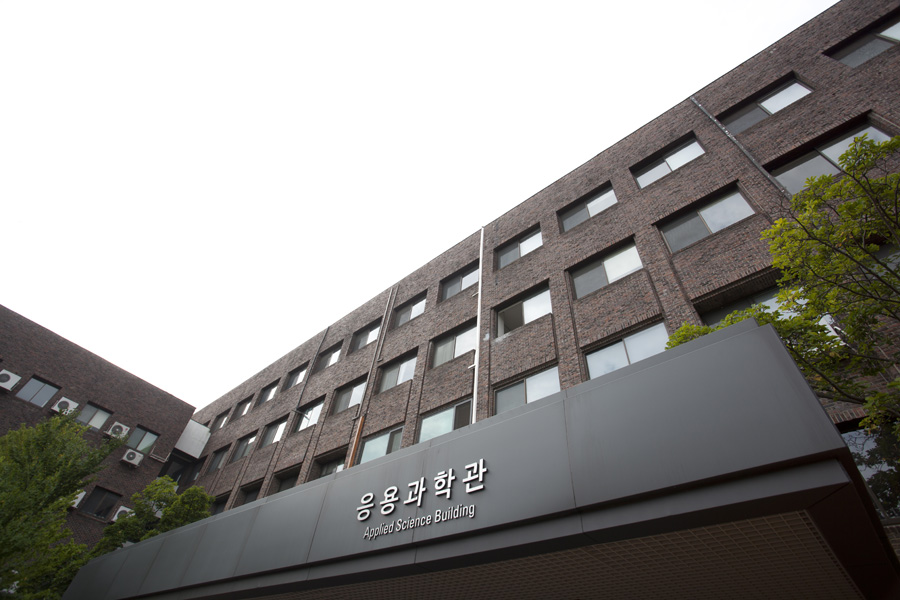

건물소개
응용과학관
이·공대 건물로 지어진 건물이다. 봄이면 중정에 교화인 목련이 핀다. 이 건물은 강의실과 연구실로 쓰이면서 도서관, 전자계산소 등이 입주해 있었다. 내부 복도에 들어가면 커뮤니케이션디자인학 소속 학생들이 꾸며 놓은 설치미술작품 등을 볼 수 있으며 빼어난 공간미를 엿볼 수 있다.
공학관

공과대 건물로 지어졌다. 남쪽 벽의 담쟁이넝쿨이 아름답다. 1985년 토목공학과 신설이 공과대학의 효시이다.
공학실험관

공과대 학생들의 전용 실습실로 이용되고 있다.